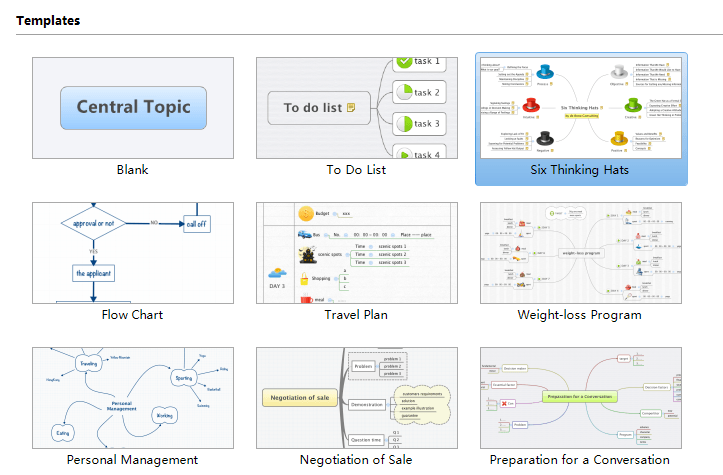
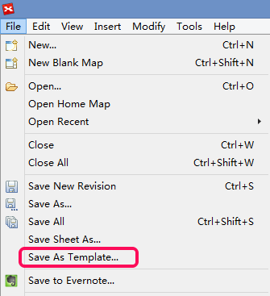

テンプレート
XMind のテンプレートは、マップの構造を構成し、.XMT ファイルとして保存します。それには 22 種類の基本的なテンプレートがあり、参考までに、ブランク(空)、ToDoリスト、６色ハット発想法、旅行プラン、組織図、プロジェクトプラン、プロジェクトステータスレポート、プロジェクトダッシュボード、販売交渉、対話の準備、マーケティングなどがあります。
テンプレートを使用する:- メニューの「ファイル → 新規」を選択します。
- ダイアログが表示されるので、好みのテンプレートをダブルクリックします。

独自のテンプレートを作成:
- 構造を設定し、いくつかの基本的なサブトピックを追加して、マップを作成します。
- 例えば、壁紙、トピックのフォントや線の見栄えなど、好みのスタイルを設定します。
- メニューの「ファイル → 保存テンプレートとして保存...」をクリックします。
- フォルダーを選択し、テンプレートを保存します。

自分のテンプレートをXMind に追加:- メニューの「ファイル → 新規」を選択します。
- 「テンプレートを追加..」をクリックし、テンプレートを選択します。
- そうすると、XMind に、マインドマップ作成時に使用できるテンプレートが追加されます。